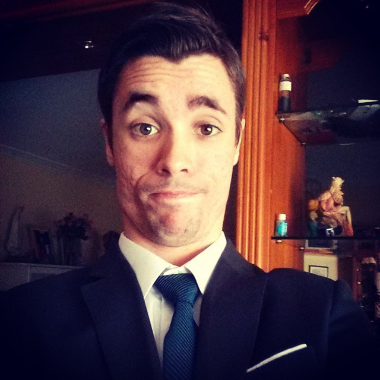

Sobre mi persona

Bienvenido, esta es mi página web. Nacido en 1991 (Cartagena - Murcia), Empecé desde bien pequeño en el mundillo de la informática. Al principio, como en todo, no hacía más que estropear el ordenador, esto me daba problemas en casa, así que pronto tuve que aprender a solucionar lo que hacía.
Antes de la informática, la electrónica me encantaba, tanto que desatornillaba todas las cosas a mi alcance por el mero hecho de saber su funcionamiento, otras veces cogía juguetes que no usaba, los desmontaba y jugaba a inventar nuevas cosas con los elementos que encontraba, y cuando de verdad descubrí el potencial del ordenador fue cuando eso quedó en un segundo plano, con 14 años comencé a entender por encima que es la programación, por qué existe, mi hermano mayor me inició en programación web y desde ese punto de partida comencé a leer por mi mismo tutoriales, conforme avanzaba iba creando proyectos para ir probando nuevos conceptos.
Poco a poco fuí avanzando, aprendiendo nuevos lenguajes, comencé por HTML, luego aprendí CSS, al tiempo JavaScript, así hasta día de hoy HTML5, CSS3, JavaScript, JQuery, PHP y manejo de bases de datos SQL, además de lenguajes orientados a proyectos web también me interesé por lenguages para aplicaciones de escritorio, como Java, Python, Bash, Visual Basic, C++, pero sin duda lo que más me atrae son los proyectos web.
Sobre mis estudios
Me formé como técnico en sistemas en el instituto Carlos III de Cartagena, luego hice las prácticas y durante un tiempo ese fue mi trabajo, con la llegada de la crisis, despidieron a personal de la empresa y entre ese personal, a mi. De modo que he ido de freelancer por la vida, desarrollando y programando proyectos para aquellos que contactaban conmigo, amigos y conocidos.
Hice un curso de Monitor Sociocultural en Jumilla.
Sobre mis proyectos
Tengo proyectos personales y proyectos que desarrollo en grupo, como:
www.layanos.tk - Un escritorio web con HTML5, CSS3, JavaScript, MySQL y PHP.
Let's Do Something - Una idea para usar la informatica como fuente ANTI-Sedentarismo.
www.gisp.tk - Portal web para un grupo de parapsicología.
www.aprendelinux.com - Blog monotema sobre Linux, en él explico manuales y formas de solucionar problemas.
Además de crear páginas web, también diseño y hago retoque de fotografía en Adobe PhotoShop CC
Trabajos
www.tanatoriojumilla - Página web del tanatorio de la localidad Jumilla
www.ode24.com - Página web de una tienda de informática en Cartagena.
www.toldosnicolas.com - Página web de una tienda de toldos en Cartagena.
www.ccmonreal.es - Página web de la cafetería y cervecería que hay junto al hotel Monreal (Jumilla).